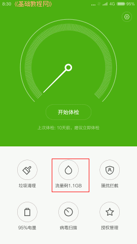
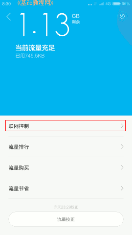
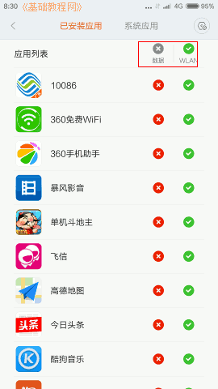
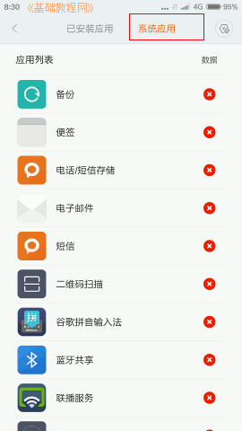
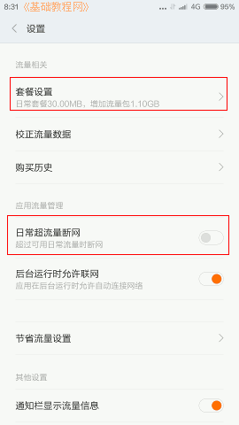
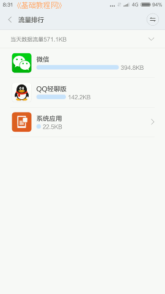

小米4手机操作指南玩家手册
作者：TeliuTe 来源：基础教程网
八、联网控制 返回目录 下一课在安全中心里，可以设置是否允许应用程序使用套餐流量，从而防止流量浪费太多；
1、联网控制数据或wifi网络
1）在桌面找到并打开“安全中心”；
2）点击里面的“流量”水滴图标；

3）在出来的功能列表中，点击“联网控制”；

4）首先是应用程序设置，有两列分别是数据套餐流量和wifi网络，点击对应的可以先关闭，要用的时候再点开；

5）划一下或点“系统应用”，可以关闭系统应用流量，拿不准的先开着，
点右上角的齿轮，可以设置新安装的程序不允许使用数据流量，以免新安装的程序自动连接数据流量；

6）回到功能列表界面的右上角，点按齿轮可以进入设置页面，设置自己的流量套餐，流量超出时断开网络，校正流量等；

7）在功能列表中，点“流量排行”可以查看当天的流量使用情况；

8）通过这些操作可以节省流量，查看浪费流量的程序，屏蔽一些不需要使用网络的程序；
本节学习了联网控制的基础知识，如果你成功地完成了练习，请继续学习下一课内容；
本教程由86团学校TeliuTe制作|著作权所有
基础教程网：http://teliute.org/
美丽的校园……
转载和引用本站内容，请保留作者和本站链接。